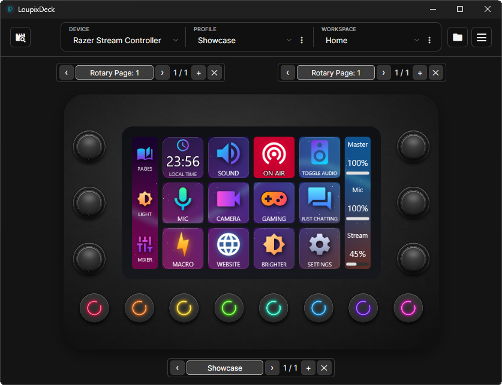
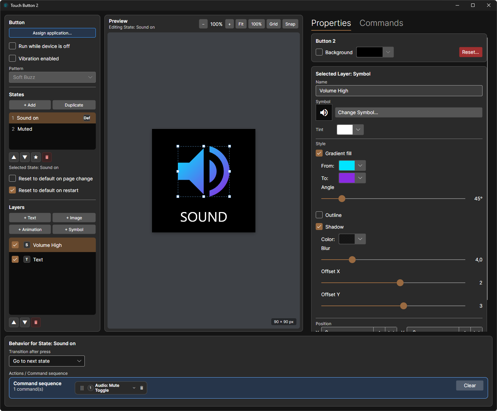
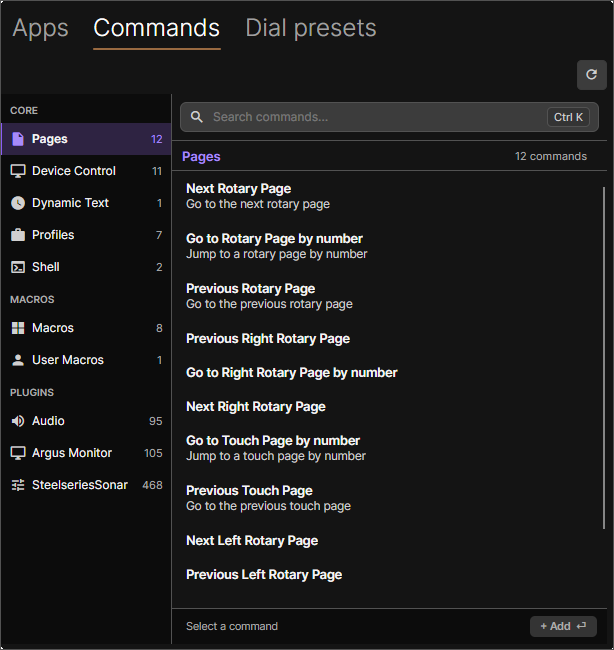
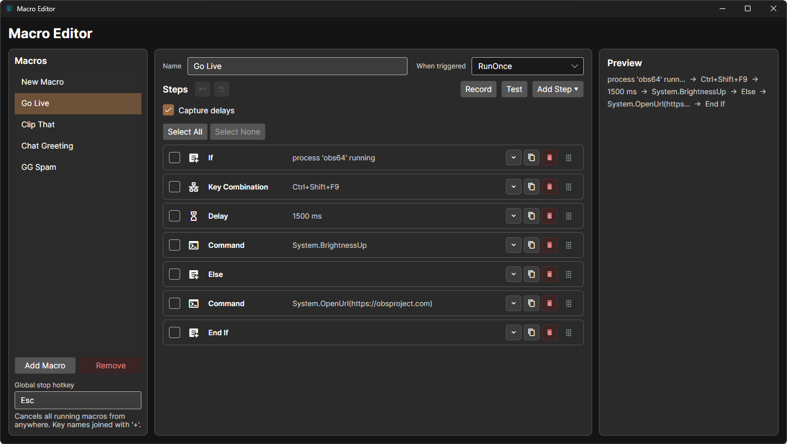
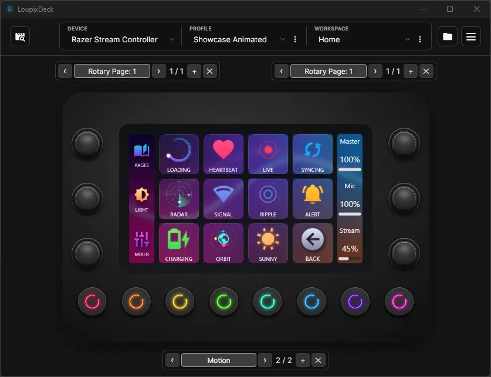

Your control deck.No vendor software.
An open-source control deck application for Loupedeck and Razer Stream Controller devices. Build touch pages, rotary controls, folders, macros and app-aware layouts on Windows and Linux – with experimental builds for macOS.

Everything the hardware can do – on every desktop you use.
Profiles, layered buttons, rotary actions, macros and plugins in one native app. Release builds are self-contained; the .NET runtime is included.
Cross-platform
Native on Windows and Linux, including SteamOS, plus experimental macOS builds.
Your layout, your way
Profiles, workspaces, pages, nested folders and per-page wallpapers.
Powerful controls
Layered buttons, multiple states, rotary actions, macros and app-focus switching.
Multiple devices
Run several controllers at once – even identical models.
Extensible
Install integrations from the built-in Plugin Store or write your own.
Portable
Share profiles, workspaces or single pages as .loupixprofile packages.
Ready-made profiles
Device-sized templates for everyday controls, media, OBS, Resolve or Home Assistant.
Multilingual
English, German and Spanish interfaces; plugins follow the app language.
Design every key, dial and page.
Layered buttons with live preview
Combine image, animated image, text and symbol layers. Move and edit them directly, add outlines, gradients and shadows, and give one button several named states with their own visuals and actions.
- Full Material Design Icons and Light sets, plus your own SVG icon folders
- Installed fonts per text layer and live value indicators
- Icon/text layout templates for a key, a page or an import


Drag a command onto a key. Done.
Open the Apps and Commands panel and drop an application or command onto any control. Dials get separate actions for rotate left, rotate right, click and press – or a whole multi-command sequence.
- Built-in, plugin-provided and user-created dial presets
- Independent rotary pages and the Loupedeck CT centre wheel
- Pages switch automatically when the focused app changes
Visual macros with logic
Keyboard and mouse input, delays, commands, variables, conditions, loops, wait conditions and prompts – built visually, no scripting required.
| Windows | SendInput · optional Interception driver |
|---|---|
| Linux | uinput |
| macOS | CGEventPost · needs Accessibility permission |


Keys that move
Keys play animated GIF and WebP images or short video clips, and a page can use a looping video wallpaper. Every animation runs at the same time, and on the Razer Stream Controller the wallpaper continues across the side strips.
Video playback needs ffmpeg.
Five controllers. Several at once.
Devices are told apart by USB serial number, so even two identical decks keep their own configuration. Companion devices can mirror a master's profiles while keeping their own pages.
| Device | Status | Controls | USB VID:PID |
|---|---|---|---|
| Loupedeck Live | Supported | 4×3 touch grid, 2 touch strips, 6 dials, 8 round buttons | 2ec2:0004 |
| Loupedeck Live S | Supported | 5×3 touch grid, 2 dials, 8 physical buttons | 2ec2:0006 |
| Loupedeck CT | Supported | 4×3 touch grid, wheel display, 6 dials and additional buttons | 2ec2:0003 / 0007 |
| Razer Stream Controller | Supported | 4×3 touch grid, 2 side panels, 6 dials, 8 LED buttons | 1532:0d06 |
| Razer Stream Controller X | Supported | 5×3 physical key grid with press-and-hold | 1532:0d09 |
No hardware yet? Every model also runs as a virtual device with a simulator window: --virtual-device loupedeck-ct
Dozens of integrations, one click away.
Install, update and remove plugins from the built-in store. Downloads are checked against their published checksums, and settings survive updates.
Loading plugins…
Up and running in a minute.
Release builds are self-contained. The in-app updater keeps you current afterwards.
Windows 10 / 11
Download the setup for a normal installation, or the zip archive for portable use and run LoupixDeck.exe.
On Windows on ARM (Surface Pro X, Snapdragon laptops) use the arm64 packages – the x64 build shows blank windows under emulation.
Download for Windows| Package | For |
|---|---|
| LoupixDeck-Setup-win-x64.exe | Normal installation |
| LoupixDeck-win-x64.zip | Portable use |
| LoupixDeck-Setup-win-arm64.exe | Windows on ARM |
| LoupixDeck-win-arm64.zip | Portable, Windows on ARM |
Linux and SteamOS
Run the installer as your normal user – do not prefix it with sudo. It installs LoupixDeck, sets up device permissions and adds an application-menu entry.
On SteamOS, use the same command in Konsole while in Desktop Mode.
Trouble with hardware access? Open Settings → Diagnostics for the Device Doctor.
curl -fsSL https://github.com/RadiatorTwo/LoupixDeck/releases/latest/download/install-loupixdeck.sh | bash
# then start it from the app menu, or
loupixdeck
macOS Experimental alpha
Open the disk image and drag LoupixDeck into Applications. Expect missing features and rough edges – bug reports and hardware test results are very welcome.
Macros and direct input need the Accessibility permission (System Settings → Privacy & Security → Accessibility).
Download for macOS| Package | For |
|---|---|
| LoupixDeck-osx-arm64.dmg | Apple Silicon (M1 and later) |
| LoupixDeck-osx-x64.dmg | Intel Macs |
macOS builds are sponsored by Web Engineer.
Connect your deck
Start LoupixDeck and plug in a supported device. A template picker offers ready-made profiles for everyday controls, media, OBS, Resolve or Home Assistant.
Assign commands
Open Apps and Commands in the top-left corner and drag an application or command onto a button – or select a control and double-click the item.
Grow your setup
Add profiles, workspaces, pages and folders, and install integrations from Plugins → Plugin Store.
Scriptable, portable, migratable.
CLI and automation
Start the executable again while the app is running to send it a command – or write straight to its socket or named pipe.
./LoupixDeck nextpage
./LoupixDeck page 3
./LoupixDeck updatebutton 6 text=Build_OK backColor=LimeGreen
./LoupixDeck System.ObsStartRecord
# target one device by serial or name
./LoupixDeck -d "Loupedeck Live S" nextpage
Portable profiles
Export a profile, workspace or single page as a .loupixprofile package. Before importing, LoupixDeck shows missing plugins, compatibility warnings and macro conflicts.
Coming from Loupedeck?
Import Loupedeck profile… converts a .lp5 export – workspaces, touch and dial pages, icons, shortcuts, media and OBS actions.
Built in the open. Join in.
Bug reports, hardware testing, translations, documentation and pull requests are welcome. LoupixDeck speaks English, German and Spanish – help add more.